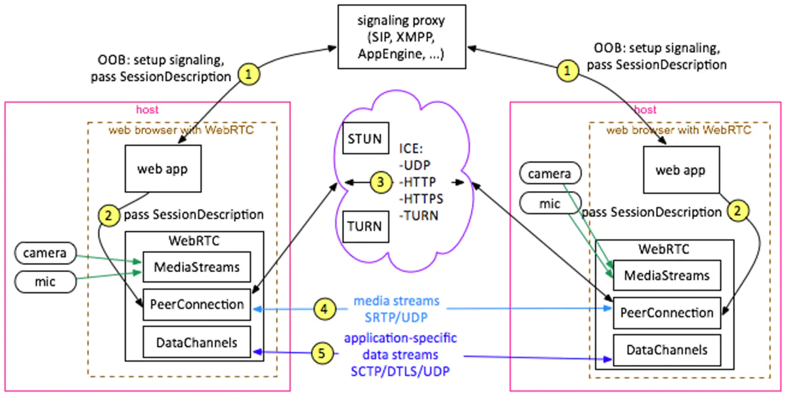
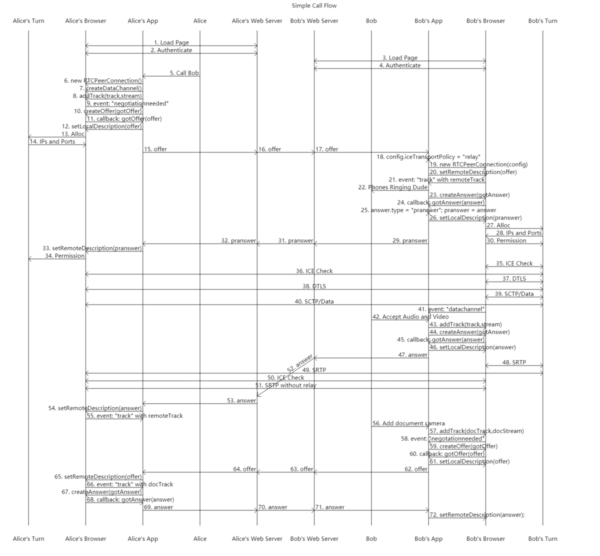
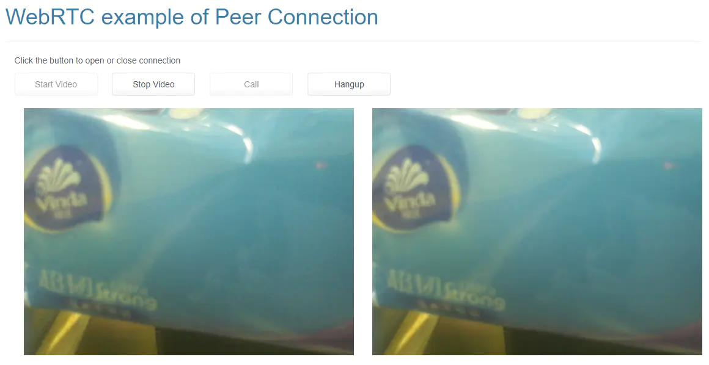
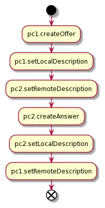
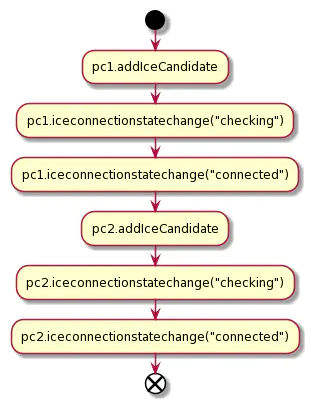

WebRTC API
Abstract |
WebRTC API |
Authors |
Walter Fan |
Status |
WIP as draft |
Category |
LearningNote |
Updated |
2026-03-05 |
概论
WebRTC 是一套基于 Web 的实时通信解决方案，通过浏览器内置的 API 来支持音视频通道的搭建。
简而言之，先在信令通道协商出彼此的媒体和通信参数,再通过媒体通道来传输音视频媒体数据。
JavaScrpt 中用到的三个主要的对象有：
MediaStream 获取和渲染音频和视频流
RTCPeerConnection 支持音频和视频媒体数据通信
RTCDataChannel 支持应用级的数据通信
对于媒体传输层，WebRTC 规定了用 ICE/STUN/TURN 来连通，用 DTLS 来协商 SRTP 密钥，用 SRTP 来传输媒体数据, 用 SCTP 来传输应用数据。
而在信令层，WebRTC 并未指定，各个应用可以用自己喜欢的信令协议来进行媒体协商，一般都是用 XMPP, SIP 或者自定义的消息格式包含 SDP，通过 HTTP, WebSocket 或直接用 TCP 协议承载具体的媒体会话描述。
RTCRtpTransceiver
A transceiver is uniquely identified using its mid property, which is the same as the media ID (mid) of its corresponding m-line. An RTCRtpTransceiver is associated with an m-line if its mid is non-null; otherwise it's considered disassociated.
典型流程
如果我们要进行视频聊天， 最基本的呼叫流程大致如下：

收集本地的媒体源(麦克风，摄像头)作为 MediaStream 媒体流, 通过 getUserMedia 得到相应的媒体流 MediaStreamTrack
创建 RTC PeerConnection, 将收集到的 MediaStream(MediaStreamTrack) 通过 addTrack 方法添加到 RTCPeerConnection中
在两个对端间通过 WebSocket 或其他传输通道来创建信令通道
通过信令通道来交换彼此的会话描述信息 SDP 的 offer 和 answer
通过 ICE/STUN/TURN 协议，协商出可连通的 Candidate Pair(候选者对) 在 ICE candidate paire 之间做连通性检查,在相通的Candidate Pair间 创建 PeerConnection
PeerConnection 创建好后，通过DTLS来交换传输加密的密钥，用SRTP来加密封装音视频数据进行传输
简单来说通信的双方需要了解两块信息：
ICE 候选者 ICE Candidates：包括可用来通信：的地址信息
会话描述信息 Session Description： 包括媒体种类，编码，格式等等。
ICE的全称是" Interactive Connectivity Establishment " 即交互式连接的建立: 一个用于网络地址转换穿越的协议
大致的流程如下， Alice 想要和 Bob 在网上聊天（包括文字，语音和视频），需要经过这些步骤， 看起来很复杂，我们一步细细分解来说

示例
详细代码参见 https://github.com/walterfan/webrtc_primer/blob/main/examples/local_peer_connection.html 主要功能就是放置四个按钮和两个 video 元素
<!DOCTYPE html>
<html xmlns="http://www.w3.org/1999/xhtml">
<head>
//... 省略引入的 css 和 js 文件
</head>
<body>
<!-- <a href="https://github.com/walterfan/webrtc-primer"><img style="position: absolute; top: 0; left: 0; border: 0; z-index: 1001;" src="https://s3.amazonaws.com/github/ribbons/forkme_left_darkblue_121621.png" alt="Fork me on GitHub"></a>
-->
<nav class="navbar navbar-default navbar-static-top">
</nav>
<div class="container">
<div class="row">
<div class="col-lg-12">
<div class="page-header">
<h1>WebRTC example of Peer Connection </h1>
</div>
<div class="container" id="details">
<div class="row">
<div class="col-lg-12">
<p>Click the button to open or close connection</p>
<div>
<button class="btn btn-default" autocomplete="off" id="startButton">Start Video</button>
<button class="btn btn-default" autocomplete="off" id="stopButton">Stop Video</button>
<button class="btn btn-default" autocomplete="off" id="callButton">Call</button>
<button class="btn btn-default" autocomplete="off" id="hangupButton">Hangup</button>
</div>
<br/>
</div>
<div class="col-lg-12">
<div class="col-lg-6"><video id="localVideo" autoplay></video></div>
<div class="col-lg-6"><video id="remoteVideo" autoplay></video></div>
</div>
<div>
<div class="box">
<span>SDP Semantics:</span>
<select id="sdpSemantics">
<option selected value="">Default</option>
<option value="unified-plan">Unified Plan</option>
<option value="plan-b">Plan B</option>
</select>
</div>
<div>
<button class="btn btn-default" autocomplete="off" id="sdpButton">Display SDP</button>
<textarea id="output"></textarea>
<code><pre>
interface RTCOfferAnswerOptions {
voiceActivityDetection?: boolean;
}
interface RTCOfferOptions extends RTCOfferAnswerOptions {
iceRestart?: boolean;
offerToReceiveAudio?: boolean;
offerToReceiveVideo?: boolean;
}
</pre></code>
</div>
</div>
</div>
<!-- 省略若干 HTML 片断 -->
</div>
<script type="text/javascript" src="js/local_peer_connection_demo.js"></script>
</body>
</html>
'use strict';
const startButton = document.getElementById('startButton');
const stopButton = document.getElementById('stopButton');
const callButton = document.getElementById('callButton');
const hangupButton = document.getElementById('hangupButton');
const sdpButton = document.getElementById('sdpButton');
const outputTextarea = document.querySelector('textarea#output');
stopButton.disabled = true;
callButton.disabled = true;
hangupButton.disabled = true;
startButton.addEventListener('click', start);
stopButton.addEventListener('click', stop);
callButton.addEventListener('click', call);
hangupButton.addEventListener('click', hangup);
sdpButton.addEventListener('click', displaySdp);
let startTime;
const localVideo = document.getElementById('localVideo');
const remoteVideo = document.getElementById('remoteVideo')
localVideo.addEventListener('loadedmetadata', function() {
console.log(`Local video videoWidth: ${this.videoWidth}px, videoHeight: ${this.videoHeight}px`);
});
remoteVideo.addEventListener('loadedmetadata', function() {
console.log(`Remote video videoWidth: ${this.videoWidth}px, videoHeight: ${this.videoHeight}px`);
});
remoteVideo.addEventListener('resize', () => {
console.log(`Remote video size changed to ${remoteVideo.videoWidth}x${remoteVideo.videoHeight}`);
// We'll use the first onsize callback as an indication that video has started
// playing out.
if (startTime) {
const elapsedTime = window.performance.now() - startTime;
console.log('Setup time: ' + elapsedTime.toFixed(3) + 'ms');
startTime = null;
}
});
let localStream;
let pc1;
let pc2;
const offerOptions = {
offerToReceiveAudio: 1,
offerToReceiveVideo: 1,
iceRestart:true,
voiceActivityDetection: true
};
function getName(pc) {
return (pc === pc1) ? 'pc1' : 'pc2';
}
function getOtherPc(pc) {
return (pc === pc1) ? pc2 : pc1;
}
//start the video stream
async function start() {
console.log('Requesting local stream');
startButton.disabled = true;
stopButton.disabled = false;
try {
const stream = await navigator.mediaDevices.getUserMedia({audio: true, video: true});
weblog('Received local stream');
localVideo.srcObject = stream;
localStream = stream;
callButton.disabled = false;
} catch (e) {
alert(`getUserMedia() error: ${e.name}`);
}
}
function stop(e) {
const stream = localVideo.srcObject;
const tracks = stream.getTracks();
e.target.disabled = true;
startButton.disabled = false;
callButton.disabled = true;
tracks.forEach(function(track) {
track.stop();
});
localVideo.srcObject = null;
}
function getSelectedSdpSemantics() {
const sdpSemanticsSelect = document.querySelector('#sdpSemantics');
const option = sdpSemanticsSelect.options[sdpSemanticsSelect.selectedIndex];
return option.value === '' ? {} : {sdpSemantics: option.value};
}
//call the remote peer
async function call() {
callButton.disabled = true;
hangupButton.disabled = false;
weblog('Starting call');
startTime = window.performance.now();
const videoTracks = localStream.getVideoTracks();
const audioTracks = localStream.getAudioTracks();
if (videoTracks.length > 0) {
weblog(`Using video device: ${videoTracks[0].label}`);
}
if (audioTracks.length > 0) {
weblog(`Using audio device: ${audioTracks[0].label}`);
}
const configuration = getSelectedSdpSemantics();
weblog('RTCPeerConnection configuration:', configuration);
pc1 = new RTCPeerConnection(configuration);
weblog('Created local peer connection object pc1');
pc1.addEventListener('icecandidate', e => onIceCandidate(pc1, e));
pc2 = new RTCPeerConnection(configuration);
weblog('Created remote peer connection object pc2');
pc2.addEventListener('icecandidate', e => onIceCandidate(pc2, e));
pc1.addEventListener('iceconnectionstatechange', e => onIceStateChange(pc1, e));
pc2.addEventListener('iceconnectionstatechange', e => onIceStateChange(pc2, e));
pc2.addEventListener('track', gotRemoteStream);
localStream.getTracks().forEach(track => pc1.addTrack(track, localStream));
weblog('Added local stream to pc1');
try {
weblog('pc1 createOffer start');
const offer = await pc1.createOffer(offerOptions);
await onCreateOfferSuccess(offer);
} catch (e) {
onCreateSessionDescriptionError(e);
}
}
function onCreateSessionDescriptionError(error) {
console.log(`Failed to create session description: ${error.toString()}`);
}
async function onCreateOfferSuccess(desc) {
weblog(`Offer from pc1\n${desc.sdp}`);
weblog('pc1 setLocalDescription start');
try {
await pc1.setLocalDescription(desc);
onSetLocalSuccess(pc1);
} catch (e) {
onSetSessionDescriptionError();
}
weblog('pc2 setRemoteDescription start');
try {
await pc2.setRemoteDescription(desc);
onSetRemoteSuccess(pc2);
} catch (e) {
onSetSessionDescriptionError();
}
weblog('pc2 createAnswer start');
// Since the 'remote' side has no media stream we need
// to pass in the right constraints in order for it to
// accept the incoming offer of audio and video.
try {
const answer = await pc2.createAnswer();
await onCreateAnswerSuccess(answer);
} catch (e) {
onCreateSessionDescriptionError(e);
}
}
function onSetLocalSuccess(pc) {
weblog(`${getName(pc)} setLocalDescription complete`);
}
function onSetRemoteSuccess(pc) {
weblog(`${getName(pc)} setRemoteDescription complete`);
}
function onSetSessionDescriptionError(error) {
weblog(`Failed to set session description: ${error.toString()}`);
}
function gotRemoteStream(e) {
if (remoteVideo.srcObject !== e.streams[0]) {
remoteVideo.srcObject = e.streams[0];
weblog('pc2 received remote stream');
}
}
async function onCreateAnswerSuccess(desc) {
weblog(`Answer from pc2:\n${desc.sdp}`);
weblog('pc2 setLocalDescription start');
try {
await pc2.setLocalDescription(desc);
onSetLocalSuccess(pc2);
} catch (e) {
onSetSessionDescriptionError(e);
}
console.log('pc1 setRemoteDescription start');
try {
await pc1.setRemoteDescription(desc);
onSetRemoteSuccess(pc1);
} catch (e) {
onSetSessionDescriptionError(e);
}
}
async function onIceCandidate(pc, event) {
try {
await (getOtherPc(pc).addIceCandidate(event.candidate));
onAddIceCandidateSuccess(pc);
} catch (e) {
onAddIceCandidateError(pc, e);
}
console.log(`${getName(pc)} ICE candidate:\n${event.candidate ? event.candidate.candidate : '(null)'}`);
}
function onAddIceCandidateSuccess(pc) {
weblog(`${getName(pc)} addIceCandidate success`);
}
function onAddIceCandidateError(pc, error) {
weblog(`${getName(pc)} failed to add ICE Candidate: ${error.toString()}`);
}
function onIceStateChange(pc, event) {
if (pc) {
weblog(`${getName(pc)} ICE state: ${pc.iceConnectionState}`);
weblog('ICE state change event: ', event);
}
}
function hangup() {
weblog('Ending call');
pc1.close();
pc2.close();
pc1 = null;
pc2 = null;
hangupButton.disabled = true;
callButton.disabled = false;
}
async function displaySdp() {
const configuration = getSelectedSdpSemantics();
let peerConnection = new RTCPeerConnection(configuration);
const offer = await peerConnection.createOffer(offerOptions);
await peerConnection.setLocalDescription(offer);
outputTextarea.value = offer.sdp;
}
整个程序实现可以在这里访问 https://www.fanyamin.com/webrtc/examples/local_peer_connection.html

我在页面了把整个连接的步骤打印了出来
[49.461] Received local stream
[72.743] Starting call
[72.743] Using video device: USB Video Device (046d:081d)
[72.743] Using audio device: 默认 - 麦克风 (USB Audio Device) (046d:081d)
[72.743] RTCPeerConnection configuration:
[72.745] Created local peer connection object pc1
[72.746] Created remote peer connection object pc2
[72.746] Added local stream to pc1
[72.747] pc1 createOffer start
[72.765] Offer from pc1 v=0 o=- 8212739043455445815 2 IN IP4 127.0.0.1 s=- t=0 0 a=group:BUNDLE 0 1 a=msid-semantic: WMS xlhFA5NOFj9VpQ7Z1ylg9jmfNytu6l7jTKhQ m=audio 9 UDP/TLS/RTP/SAVPF 111 103 104 9 0 8 106 105 13 110 112 113 126 c=IN IP4 0.0.0.0 a=rtcp:9 IN IP4 0.0.0.0 a=ice-ufrag:nTn7 a=ice-pwd:1XyHlJ5xBTJ7NBuU5Y5mBqCn a=ice-options:trickle a=fingerprint:sha-256 51:62:BB:13:05:A7:38:05:47:78:BA:70:A6:A7:64:29:6C:45:00:AC:B3:7F:92:45:80:F5:5A:4B:10:7A:36:42 a=setup:actpass a=mid:0 a=extmap:1 urn:ietf:params:rtp-hdrext:ssrc-audio-level a=extmap:2 http://www.webrtc.org/experiments/rtp-hdrext/abs-send-time a=extmap:3 http://www.ietf.org/id/draft-holmer-rmcat-transport-wide-cc-extensions-01 a=extmap:4 urn:ietf:params:rtp-hdrext:sdes:mid a=extmap:5 urn:ietf:params:rtp-hdrext:sdes:rtp-stream-id a=extmap:6 urn:ietf:params:rtp-hdrext:sdes:repaired-rtp-stream-id a=sendrecv a=msid:xlhFA5NOFj9VpQ7Z1ylg9jmfNytu6l7jTKhQ 2cbf5334-0e08-4985-817f-a666c35b633b a=rtcp-mux a=rtpmap:111 opus/48000/2 a=rtcp-fb:111 transport-cc a=fmtp:111 minptime=10;useinbandfec=1 a=rtpmap:103 ISAC/16000 a=rtpmap:104 ISAC/32000 a=rtpmap:9 G722/8000 a=rtpmap:0 PCMU/8000 a=rtpmap:8 PCMA/8000 a=rtpmap:106 CN/32000 a=rtpmap:105 CN/16000 a=rtpmap:13 CN/8000 a=rtpmap:110 telephone-event/48000 a=rtpmap:112 telephone-event/32000 a=rtpmap:113 telephone-event/16000 a=rtpmap:126 telephone-event/8000 a=ssrc:2931786518 cname:JVCgjci5cC/oQHwi a=ssrc:2931786518 msid:xlhFA5NOFj9VpQ7Z1ylg9jmfNytu6l7jTKhQ 2cbf5334-0e08-4985-817f-a666c35b633b a=ssrc:2931786518 mslabel:xlhFA5NOFj9VpQ7Z1ylg9jmfNytu6l7jTKhQ a=ssrc:2931786518 label:2cbf5334-0e08-4985-817f-a666c35b633b m=video 9 UDP/TLS/RTP/SAVPF 96 97 98 99 100 101 102 121 127 120 125 107 108 109 124 119 123 118 114 115 116 c=IN IP4 0.0.0.0 a=rtcp:9 IN IP4 0.0.0.0 a=ice-ufrag:nTn7 a=ice-pwd:1XyHlJ5xBTJ7NBuU5Y5mBqCn a=ice-options:trickle a=fingerprint:sha-256 51:62:BB:13:05:A7:38:05:47:78:BA:70:A6:A7:64:29:6C:45:00:AC:B3:7F:92:45:80:F5:5A:4B:10:7A:36:42 a=setup:actpass a=mid:1 a=extmap:14 urn:ietf:params:rtp-hdrext:toffset a=extmap:2 http://www.webrtc.org/experiments/rtp-hdrext/abs-send-time a=extmap:13 urn:3gpp:video-orientation a=extmap:3 http://www.ietf.org/id/draft-holmer-rmcat-transport-wide-cc-extensions-01 a=extmap:12 http://www.webrtc.org/experiments/rtp-hdrext/playout-delay a=extmap:11 http://www.webrtc.org/experiments/rtp-hdrext/video-content-type a=extmap:7 http://www.webrtc.org/experiments/rtp-hdrext/video-timing a=extmap:8 http://www.webrtc.org/experiments/rtp-hdrext/color-space a=extmap:4 urn:ietf:params:rtp-hdrext:sdes:mid a=extmap:5 urn:ietf:params:rtp-hdrext:sdes:rtp-stream-id a=extmap:6 urn:ietf:params:rtp-hdrext:sdes:repaired-rtp-stream-id a=sendrecv a=msid:xlhFA5NOFj9VpQ7Z1ylg9jmfNytu6l7jTKhQ 906550e7-7a71-4c6a-a7ca-8f81fa0efe6c a=rtcp-mux a=rtcp-rsize a=rtpmap:96 VP8/90000 a=rtcp-fb:96 goog-remb a=rtcp-fb:96 transport-cc a=rtcp-fb:96 ccm fir a=rtcp-fb:96 nack a=rtcp-fb:96 nack pli a=rtpmap:97 rtx/90000 a=fmtp:97 apt=96 a=rtpmap:98 VP9/90000 a=rtcp-fb:98 goog-remb a=rtcp-fb:98 transport-cc a=rtcp-fb:98 ccm fir a=rtcp-fb:98 nack a=rtcp-fb:98 nack pli a=fmtp:98 profile-id=0 a=rtpmap:99 rtx/90000 a=fmtp:99 apt=98 a=rtpmap:100 VP9/90000 a=rtcp-fb:100 goog-remb a=rtcp-fb:100 transport-cc a=rtcp-fb:100 ccm fir a=rtcp-fb:100 nack a=rtcp-fb:100 nack pli a=fmtp:100 profile-id=2 a=rtpmap:101 rtx/90000 a=fmtp:101 apt=100 a=rtpmap:102 H264/90000 a=rtcp-fb:102 goog-remb a=rtcp-fb:102 transport-cc a=rtcp-fb:102 ccm fir a=rtcp-fb:102 nack a=rtcp-fb:102 nack pli a=fmtp:102 level-asymmetry-allowed=1;packetization-mode=1;profile-level-id=42001f a=rtpmap:121 rtx/90000 a=fmtp:121 apt=102 a=rtpmap:127 H264/90000 a=rtcp-fb:127 goog-remb a=rtcp-fb:127 transport-cc a=rtcp-fb:127 ccm fir a=rtcp-fb:127 nack a=rtcp-fb:127 nack pli a=fmtp:127 level-asymmetry-allowed=1;packetization-mode=0;profile-level-id=42001f a=rtpmap:120 rtx/90000 a=fmtp:120 apt=127 a=rtpmap:125 H264/90000 a=rtcp-fb:125 goog-remb a=rtcp-fb:125 transport-cc a=rtcp-fb:125 ccm fir a=rtcp-fb:125 nack a=rtcp-fb:125 nack pli a=fmtp:125 level-asymmetry-allowed=1;packetization-mode=1;profile-level-id=42e01f a=rtpmap:107 rtx/90000 a=fmtp:107 apt=125 a=rtpmap:108 H264/90000 a=rtcp-fb:108 goog-remb a=rtcp-fb:108 transport-cc a=rtcp-fb:108 ccm fir a=rtcp-fb:108 nack a=rtcp-fb:108 nack pli a=fmtp:108 level-asymmetry-allowed=1;packetization-mode=0;profile-level-id=42e01f a=rtpmap:109 rtx/90000 a=fmtp:109 apt=108 a=rtpmap:124 H264/90000 a=rtcp-fb:124 goog-remb a=rtcp-fb:124 transport-cc a=rtcp-fb:124 ccm fir a=rtcp-fb:124 nack a=rtcp-fb:124 nack pli a=fmtp:124 level-asymmetry-allowed=1;packetization-mode=1;profile-level-id=4d001f a=rtpmap:119 rtx/90000 a=fmtp:119 apt=124 a=rtpmap:123 H264/90000 a=rtcp-fb:123 goog-remb a=rtcp-fb:123 transport-cc a=rtcp-fb:123 ccm fir a=rtcp-fb:123 nack a=rtcp-fb:123 nack pli a=fmtp:123 level-asymmetry-allowed=1;packetization-mode=1;profile-level-id=64001f a=rtpmap:118 rtx/90000 a=fmtp:118 apt=123 a=rtpmap:114 red/90000 a=rtpmap:115 rtx/90000 a=fmtp:115 apt=114 a=rtpmap:116 ulpfec/90000 a=ssrc-group:FID 818575976 4014440443 a=ssrc:818575976 cname:JVCgjci5cC/oQHwi a=ssrc:818575976 msid:xlhFA5NOFj9VpQ7Z1ylg9jmfNytu6l7jTKhQ 906550e7-7a71-4c6a-a7ca-8f81fa0efe6c a=ssrc:818575976 mslabel:xlhFA5NOFj9VpQ7Z1ylg9jmfNytu6l7jTKhQ a=ssrc:818575976 label:906550e7-7a71-4c6a-a7ca-8f81fa0efe6c a=ssrc:4014440443 cname:JVCgjci5cC/oQHwi a=ssrc:4014440443 msid:xlhFA5NOFj9VpQ7Z1ylg9jmfNytu6l7jTKhQ 906550e7-7a71-4c6a-a7ca-8f81fa0efe6c a=ssrc:4014440443 mslabel:xlhFA5NOFj9VpQ7Z1ylg9jmfNytu6l7jTKhQ a=ssrc:4014440443 label:906550e7-7a71-4c6a-a7ca-8f81fa0efe6c
[72.765] pc1 setLocalDescription start
[72.772] pc1 setLocalDescription complete
[72.772] pc2 setRemoteDescription start
[72.937] pc2 received remote stream
[72.937] pc2 setRemoteDescription complete
[72.937] pc2 createAnswer start
[72.959] Answer from pc2: v=0 o=- 1094912348166165889 2 IN IP4 127.0.0.1 s=- t=0 0 a=group:BUNDLE 0 1 a=msid-semantic: WMS m=audio 9 UDP/TLS/RTP/SAVPF 111 103 104 9 0 8 106 105 13 110 112 113 126 c=IN IP4 0.0.0.0 a=rtcp:9 IN IP4 0.0.0.0 a=ice-ufrag:MIpG a=ice-pwd:yeUliWqTGocmk3MfGp8WnL4z a=ice-options:trickle a=fingerprint:sha-256 94:06:0A:3C:17:86:C7:D3:BB:3F:DE:D6:8D:4A:C6:FC:FE:08:69:86:74:22:B7:7A:58:2D:49:F0:3B:97:83:6B a=setup:active a=mid:0 a=extmap:1 urn:ietf:params:rtp-hdrext:ssrc-audio-level a=extmap:2 http://www.webrtc.org/experiments/rtp-hdrext/abs-send-time a=extmap:3 http://www.ietf.org/id/draft-holmer-rmcat-transport-wide-cc-extensions-01 a=extmap:4 urn:ietf:params:rtp-hdrext:sdes:mid a=extmap:5 urn:ietf:params:rtp-hdrext:sdes:rtp-stream-id a=extmap:6 urn:ietf:params:rtp-hdrext:sdes:repaired-rtp-stream-id a=recvonly a=rtcp-mux a=rtpmap:111 opus/48000/2 a=rtcp-fb:111 transport-cc a=fmtp:111 minptime=10;useinbandfec=1 a=rtpmap:103 ISAC/16000 a=rtpmap:104 ISAC/32000 a=rtpmap:9 G722/8000 a=rtpmap:0 PCMU/8000 a=rtpmap:8 PCMA/8000 a=rtpmap:106 CN/32000 a=rtpmap:105 CN/16000 a=rtpmap:13 CN/8000 a=rtpmap:110 telephone-event/48000 a=rtpmap:112 telephone-event/32000 a=rtpmap:113 telephone-event/16000 a=rtpmap:126 telephone-event/8000 m=video 9 UDP/TLS/RTP/SAVPF 96 97 98 99 100 101 102 121 127 120 125 107 108 109 124 119 123 118 114 115 116 c=IN IP4 0.0.0.0 a=rtcp:9 IN IP4 0.0.0.0 a=ice-ufrag:MIpG a=ice-pwd:yeUliWqTGocmk3MfGp8WnL4z a=ice-options:trickle a=fingerprint:sha-256 94:06:0A:3C:17:86:C7:D3:BB:3F:DE:D6:8D:4A:C6:FC:FE:08:69:86:74:22:B7:7A:58:2D:49:F0:3B:97:83:6B a=setup:active a=mid:1 a=extmap:14 urn:ietf:params:rtp-hdrext:toffset a=extmap:2 http://www.webrtc.org/experiments/rtp-hdrext/abs-send-time a=extmap:13 urn:3gpp:video-orientation a=extmap:3 http://www.ietf.org/id/draft-holmer-rmcat-transport-wide-cc-extensions-01 a=extmap:12 http://www.webrtc.org/experiments/rtp-hdrext/playout-delay a=extmap:11 http://www.webrtc.org/experiments/rtp-hdrext/video-content-type a=extmap:7 http://www.webrtc.org/experiments/rtp-hdrext/video-timing a=extmap:8 http://www.webrtc.org/experiments/rtp-hdrext/color-space a=extmap:4 urn:ietf:params:rtp-hdrext:sdes:mid a=extmap:5 urn:ietf:params:rtp-hdrext:sdes:rtp-stream-id a=extmap:6 urn:ietf:params:rtp-hdrext:sdes:repaired-rtp-stream-id a=recvonly a=rtcp-mux a=rtcp-rsize a=rtpmap:96 VP8/90000 a=rtcp-fb:96 goog-remb a=rtcp-fb:96 transport-cc a=rtcp-fb:96 ccm fir a=rtcp-fb:96 nack a=rtcp-fb:96 nack pli a=rtpmap:97 rtx/90000 a=fmtp:97 apt=96 a=rtpmap:98 VP9/90000 a=rtcp-fb:98 goog-remb a=rtcp-fb:98 transport-cc a=rtcp-fb:98 ccm fir a=rtcp-fb:98 nack a=rtcp-fb:98 nack pli a=fmtp:98 profile-id=0 a=rtpmap:99 rtx/90000 a=fmtp:99 apt=98 a=rtpmap:100 VP9/90000 a=rtcp-fb:100 goog-remb a=rtcp-fb:100 transport-cc a=rtcp-fb:100 ccm fir a=rtcp-fb:100 nack a=rtcp-fb:100 nack pli a=fmtp:100 profile-id=2 a=rtpmap:101 rtx/90000 a=fmtp:101 apt=100 a=rtpmap:102 H264/90000 a=rtcp-fb:102 goog-remb a=rtcp-fb:102 transport-cc a=rtcp-fb:102 ccm fir a=rtcp-fb:102 nack a=rtcp-fb:102 nack pli a=fmtp:102 level-asymmetry-allowed=1;packetization-mode=1;profile-level-id=42001f a=rtpmap:121 rtx/90000 a=fmtp:121 apt=102 a=rtpmap:127 H264/90000 a=rtcp-fb:127 goog-remb a=rtcp-fb:127 transport-cc a=rtcp-fb:127 ccm fir a=rtcp-fb:127 nack a=rtcp-fb:127 nack pli a=fmtp:127 level-asymmetry-allowed=1;packetization-mode=0;profile-level-id=42001f a=rtpmap:120 rtx/90000 a=fmtp:120 apt=127 a=rtpmap:125 H264/90000 a=rtcp-fb:125 goog-remb a=rtcp-fb:125 transport-cc a=rtcp-fb:125 ccm fir a=rtcp-fb:125 nack a=rtcp-fb:125 nack pli a=fmtp:125 level-asymmetry-allowed=1;packetization-mode=1;profile-level-id=42e01f a=rtpmap:107 rtx/90000 a=fmtp:107 apt=125 a=rtpmap:108 H264/90000 a=rtcp-fb:108 goog-remb a=rtcp-fb:108 transport-cc a=rtcp-fb:108 ccm fir a=rtcp-fb:108 nack a=rtcp-fb:108 nack pli a=fmtp:108 level-asymmetry-allowed=1;packetization-mode=0;profile-level-id=42e01f a=rtpmap:109 rtx/90000 a=fmtp:109 apt=108 a=rtpmap:124 H264/90000 a=rtcp-fb:124 goog-remb a=rtcp-fb:124 transport-cc a=rtcp-fb:124 ccm fir a=rtcp-fb:124 nack a=rtcp-fb:124 nack pli a=fmtp:124 level-asymmetry-allowed=1;packetization-mode=1;profile-level-id=4d0015 a=rtpmap:119 rtx/90000 a=fmtp:119 apt=124 a=rtpmap:123 H264/90000 a=rtcp-fb:123 goog-remb a=rtcp-fb:123 transport-cc a=rtcp-fb:123 ccm fir a=rtcp-fb:123 nack a=rtcp-fb:123 nack pli a=fmtp:123 level-asymmetry-allowed=1;packetization-mode=1;profile-level-id=640015 a=rtpmap:118 rtx/90000 a=fmtp:118 apt=123 a=rtpmap:114 red/90000 a=rtpmap:115 rtx/90000 a=fmtp:115 apt=114 a=rtpmap:116 ulpfec/90000
[72.959] pc2 setLocalDescription start
[72.960] pc1 addIceCandidate success
[72.961] pc1 addIceCandidate success
[72.961] pc1 addIceCandidate success
[72.964] pc1 addIceCandidate success
[72.964] pc1 addIceCandidate success
[72.964] pc1 addIceCandidate success
[72.964] pc1 addIceCandidate success
[72.965] pc1 addIceCandidate success
[72.965] pc1 addIceCandidate success
[72.965] pc1 addIceCandidate success
[72.965] pc1 addIceCandidate success
[72.965] pc1 addIceCandidate success
[72.965] pc1 addIceCandidate success
[73.292] pc2 setLocalDescription complete
[73.294] pc2 ICE state: checking
[73.294] ICE state change event:
[73.295] pc1 ICE state: checking
[73.295] ICE state change event:
[73.295] pc2 ICE state: connected
[73.295] ICE state change event:
[73.297] pc1 ICE state: connected
[73.297] ICE state change event:
[73.297] pc1 setRemoteDescription complete
[73.305] pc2 addIceCandidate success
[73.305] pc2 addIceCandidate success
[73.305] pc2 addIceCandidate success
[73.306] pc2 addIceCandidate success
本地连接等于是自己连自己，这里的核心方法是 call()， 它创建两个 PeerConnection – pc1 和 pc 2,
async function call() {
callButton.disabled = true;
hangupButton.disabled = false;
weblog('Starting call');
startTime = window.performance.now();
const videoTracks = localStream.getVideoTracks();
const audioTracks = localStream.getAudioTracks();
if (videoTracks.length > 0) {
weblog(`Using video device: ${videoTracks[0].label}`);
}
if (audioTracks.length > 0) {
weblog(`Using audio device: ${audioTracks[0].label}`);
}
const configuration = getSelectedSdpSemantics();
weblog('RTCPeerConnection configuration:', configuration);
pc1 = new RTCPeerConnection(configuration);
weblog('Created local peer connection object pc1');
pc1.addEventListener('icecandidate', e => onIceCandidate(pc1, e));
pc2 = new RTCPeerConnection(configuration);
weblog('Created remote peer connection object pc2');
pc2.addEventListener('icecandidate', e => onIceCandidate(pc2, e));
pc1.addEventListener('iceconnectionstatechange', e => onIceStateChange(pc1, e));
pc2.addEventListener('iceconnectionstatechange', e => onIceStateChange(pc2, e));
pc2.addEventListener('track', gotRemoteStream);
localStream.getTracks().forEach(track => pc1.addTrack(track, localStream));
weblog('Added local stream to pc1');
try {
weblog('pc1 createOffer start');
const offer = await pc1.createOffer(offerOptions);
await onCreateOfferSuccess(offer);
} catch (e) {
onCreateSessionDescriptionError(e);
}
}
代码中的主要流程
SDP 协商

ICE 检查

注意 WebRTC 支持 “Trickling ICE” ， 针对多个 candidate pair , 这个过程有多次
至此， 媒体连接搭建成功， 媒体流localStream 和 remoteStream 就可以互相传输了。
下一篇文章，再详细说说远程视频聊天的创建过程。